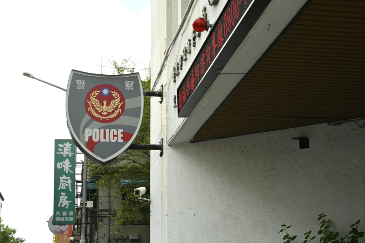
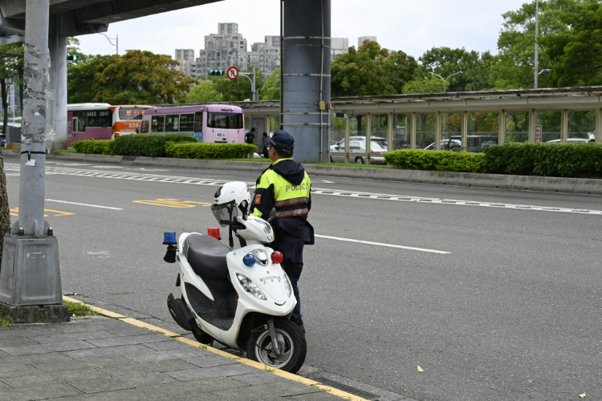
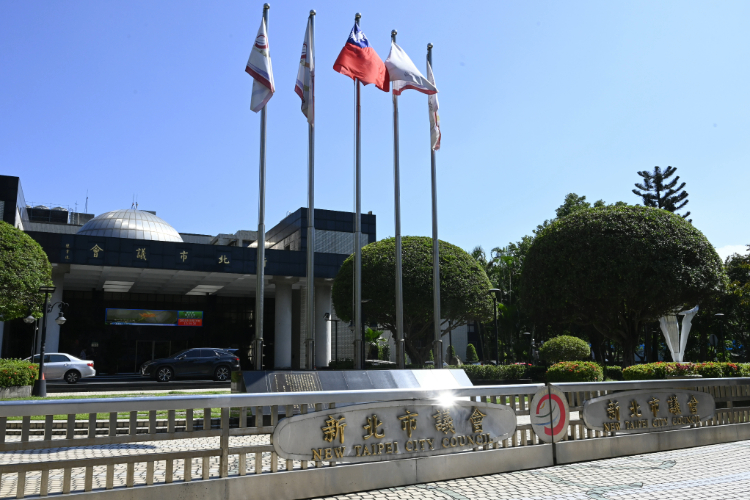
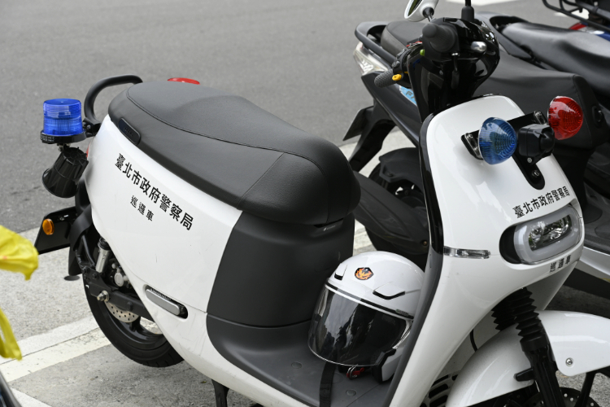

【記者施名真綜合報導】新北市於1日凌晨發生一起警員殉職案件，導致新北市土城分局清水派出所所長傷重不治。「假設發生悲劇，警察會受到政府的持續照顧嗎？還是只是一次性的慰問？」新北市議員呂家愷提問並表示，應提供事故後續的完整保障，減少員警攔查的心理壓力。

警察是保衛台灣社會的第一線，職業風險高卻未得到相應保障，造成「今日公祭，明日忘記」憾事一再重演。圖／施名真攝
今年已發生三起警員於值勤過程中身亡的案件。根據2022年考試院銓敘部的資料統計，該年度因公死亡人數高達11人。以新北市所長殉職案為例，案中的毒駕女子接受攔查時突然踩下油門向前衝，使所長伸入車窗的手勾在車內，一路向前拖行。雖教育訓練內明示，臨檢時不能將頭手伸進窗戶，但實際上若要看清楚車內狀況，勢必得將頭手靠近窗戶。踏入警界九年的指南派出所警員徐駿霖表示，「（教育訓練的）理論沒辦法概括所有現實狀況，所以警察的臨機應變很重要。」

蕭仁豪說明，臨檢是在特定時間、地點設置例行性檢查點，而攔查多是隨機針對可疑人員或車輛進行查驗，因此攔查面臨的危險更加複雜。圖／施名真攝
對於警察臨檢目前存在的職安問題，台灣警察工作權益推動協會（以下簡稱警察工會）常務理事蕭仁豪認為，事故發生後缺乏深度調查與起因分析。在回溯新北市清水派出所殉職案時，更重要的是探討所長將手伸入車窗內的原因。針對制度層面，呂家愷補充，「目前台灣針對嫌犯攔查，並沒有法規要求人民配合。」此外，他也提醒，目前警員若值勤遇到意外，相關的賠償或訴訟費用問題，更沒有給予足夠的保障。

呂家愷說明，目前警局分局長由中央指派，但預算卻由地方政府編列，他建議警員事務應由中央統一管理。此外，目前人力編制與預算仍停留在十年前，應依據各縣市狀況定期更新，以保障警員權益。圖／施名真攝
為改善警員攔查方面的職安問題，警察工會及議員各有不同看法。除了建立深度調查制度，以瞭解事故過程並釐清責任，也應設立完整的攔查法規，增加警察值勤合法性。警察工會呼籲，需透過《職業安全衛生法》，建立完整職業災害調查機制，而非僅限於個案化檢討，才能增加警員面對攔查突發狀況的反應能力。而呂家愷表示，除了建立攔查法源與程序，也應調整績效獎勵制度，以團體而非個人為單位，減少獨自進行危險性執法的風險。

警員除了受理民眾報案、定期臨檢及巡邏，也需要完成其他局處所指派的任務，例如噪音測量、確診者足跡追蹤等。此外，不同類型警察所面臨的風險也不盡相同。圖／施名真攝
現今已有許多民間團體呼籲政府正視警察職安議題，但目前多半仍以「增加警備」、「加重毒駕刑責」等間接方式應對，無法解決根本問題。指南派出所警員徐駿霖與警員楊享蒴表示，教育訓練雖然能提升值勤應變能力，但基層警員人力不足且工作繁複，導致許多人無法參與訓練。他們期盼政府重視警員專業分工並增加人手，從根本解決警員攔查的職安問題。